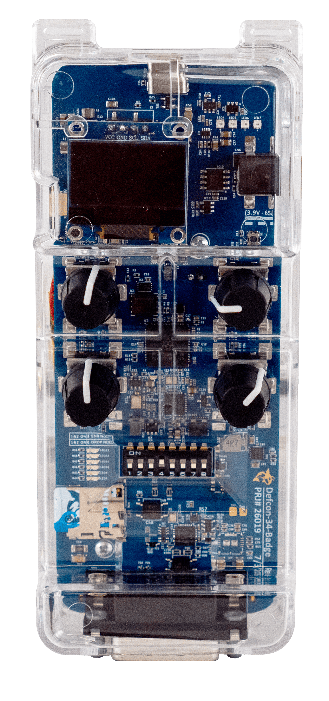
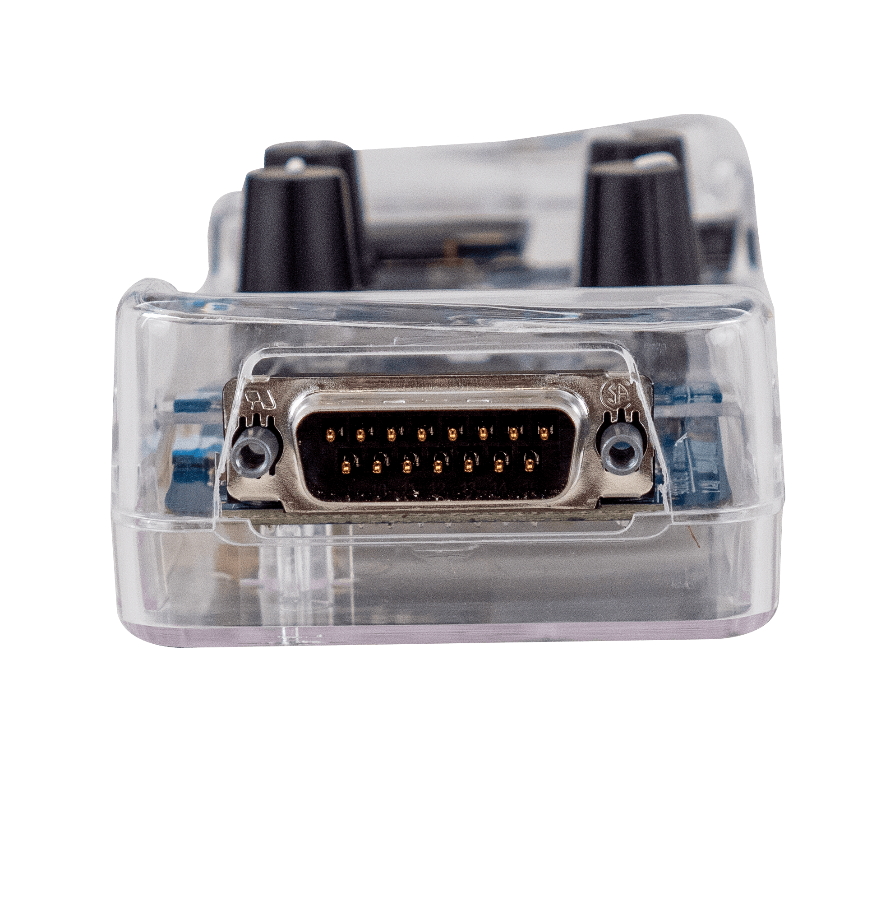
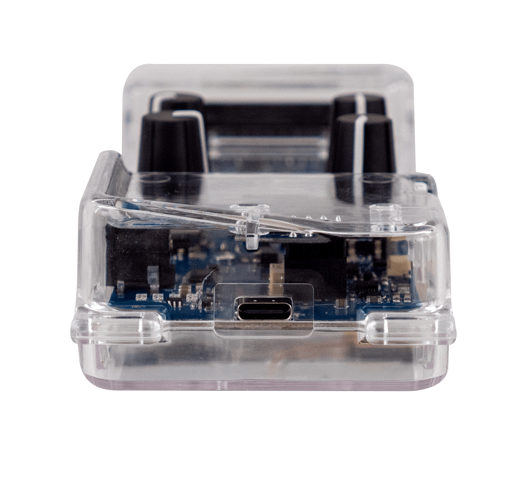

ICS Village DEF CON 34 Badge
The DEF CON 34 ICS Village Badge is a field instrument engineered for Operational Technology (OT), Industrial Control Systems (ICS), and automotive security researchers. It focuses on robust, multi-protocol hardware interfacing and delivers direct, low-level physical access to the critical communication lines driving modern automation, substations, and heavy machinery.
This badge consolidates the sort of hardware that normally lives on separate bench tools into a single portable platform. It is designed for auditing legacy systems, modern automotive networks, and industrial links without carrying a pile of breakout boards, adapters, and resistor packs.



Key hardware
- Main CPU
- Raspberry Pi RP2350B-A4
- RS485
- Modbus RTU capable, for PLC, RTU, and SCADA sniffing or tapping
- CAN / CANFD
- Direct access for automotive networks and factory-floor systems
- 10BASE-T1S
- Short-reach single-pair Ethernet with onboard physical termination switch
- 10BASE-T1L
- Long-reach single-pair Ethernet for industrial links
- Storage / UI
- SD card slot, I2C OLED screen, 4x rotary encoders, 4x programmable RGB LEDs
- Enclosure
- Clear custom-molded case for field use
Key software
- Firmware
- Runs FreeWili Porpoise Purpose Firmware
- API support
- Compatible with FreeWili OneWili API for Rust, C/C++, Python, rThon, and WASM
- USB interface
- Serial terminal USB interface
Power subsystem
- USB-C input
- 5 V USB power only; the badge does not support other power sources
To replicate the capabilities of this single badge on a standard electronics workbench, a security analyst would normally spend hundreds of dollars on separate equipment. This design consolidates single-pair Ethernet, physical bus termination, CAN, CAN FD, and RS485 into one compact board.
DB-15 pinout
The badge uses a male DB-15 connector. The view below looks straight into the pins, with the wide row of eight on top and pin 1 at the top left.
| Pin | Signal | Description |
|---|---|---|
| 1 | T1S P | 10BASE-T1S positive |
| 2 | T1S N | 10BASE-T1S negative |
| 3 | T1L P | 10BASE-T1L positive |
| 4 | RS485 P | RS485 non-inverting line (A) |
| 5 | NC | Not connected |
| 6 | CAN H | CAN / CAN FD high |
| 7 | NC | Not connected |
| 8 | GND | Ground, signal and power return |
| 9 | T1S P | 10BASE-T1S positive, joined to pin 1 |
| 10 | T1S N | 10BASE-T1S negative, joined to pin 2 |
| 11 | T1L N | 10BASE-T1L negative |
| 12 | RS485 N | RS485 inverting line (B) |
| 13 | MISC DIO | General-purpose digital I/O, 5 V logic |
| 14 | CAN L | CAN / CAN FD low |
| 15 | DC V+* | External DC power input is not supported on this badge |
* The DEF CON badge supports USB power only. Powering through DC V+ (DB-15 pin 15) or any source other than USB is not supported.
The 10BASE-T1S pair is brought out twice. Pins 1 and 9 are joined inside the badge, as are pins 2 and 10, so a multidrop segment can come in on one pair and continue on the other.